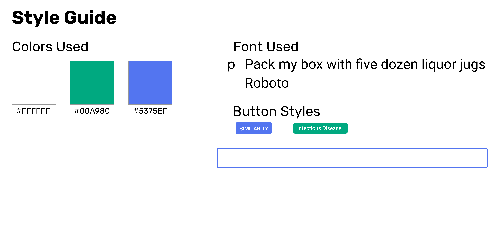
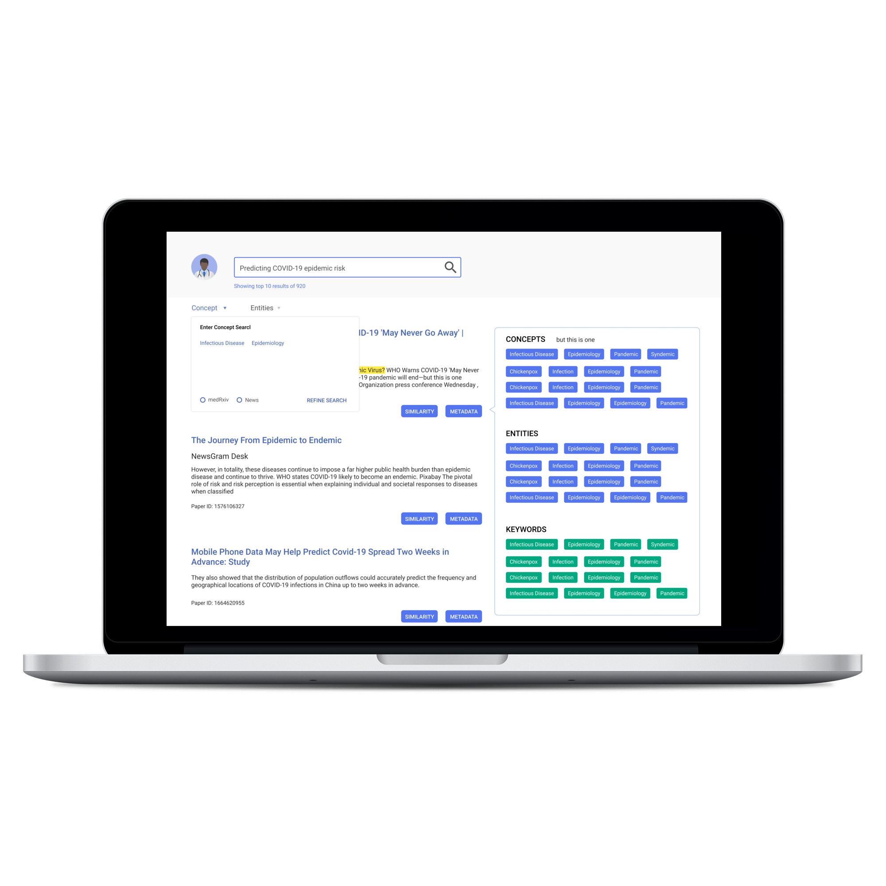

DinoSARS is a search engine that allows users to search for valid articles related to the Coronavirus.
How do we design a research database that is functional and that can provide a positive user experience?
My process for this project had a major emphasis on research and design. I have used research databases in the past for labs, but I needed to get a deeper understanding of how to create a positive user experience.
Before I could sketch the wireframes and design the final Desktop screens, I needed to understand how research databases worked and their painpoints. So I conducted a heuristic analysis on some databases. Some of these included Jstor, Wolfram Alpha, Science Open, Core, and Base. While there were many positives, I was able to find two main pain points:
Once I was satistifed with the research, I started to sketch out wireframes so I could figure out how to organize the content. When I was brought on to the project, the stakeholder said that he wanted to pull the articles from two sources: medRxiv and the News. The stakeholder also wanted to add tags onto each of the results so that users will be able to search for those articles again. Once I got a solid understanding of what he was looking for, I went ahead and created the wireframes.
Once I finalized how to organize the screens, I worked on creating a style guide.
I converted all of the sketches into final designs using Figma.
This was a project that taught me about communicating with developers. When I started working on freelance projects, I always believed that designers knew everything. However, that’s not the case. We can dream of so many aesthetics to add, but we also need to think practically. The goal of design is not just to visually attract users to the website. It is to make sure that the user has a positive experience with the service so that they are more likely to return.